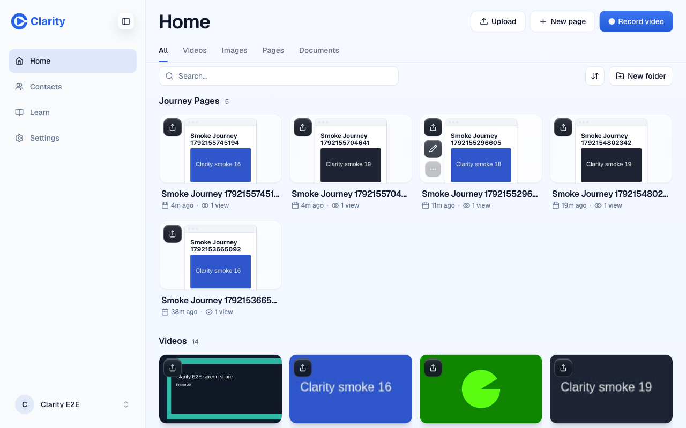
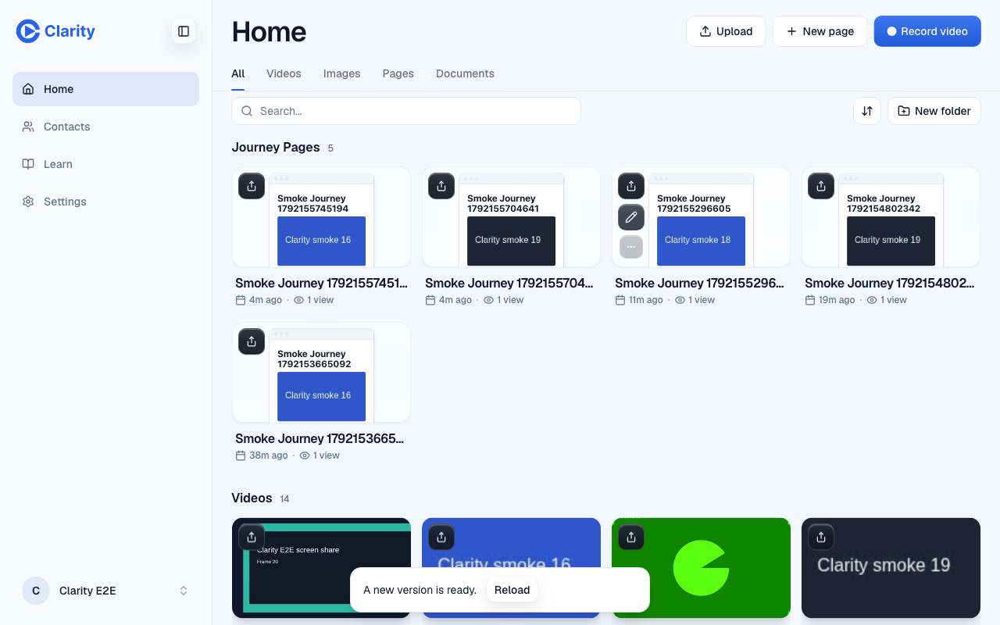
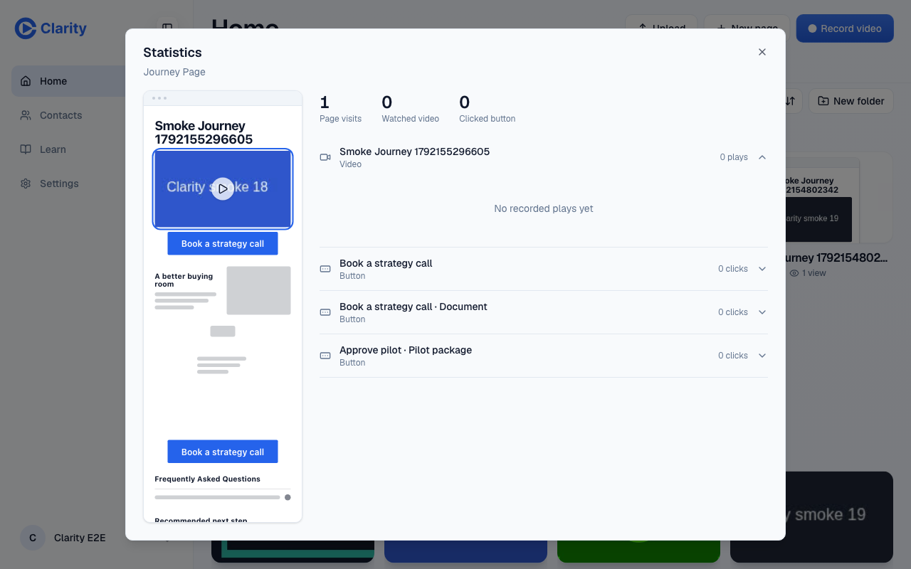
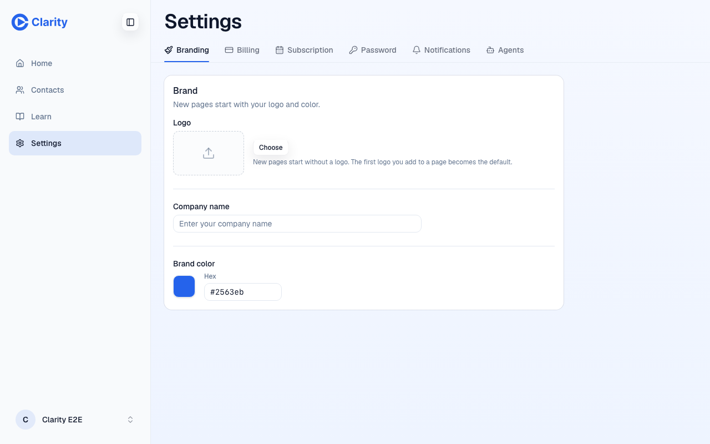

VERIFIED. All four requested checks passed on the PR preview after the redeploy. The false notice did not recur. A simulated mismatch still triggered it.
Independent test seat, 16 October 2026. Preview target. Deployed and local head ba161a3287d0e032b867036384e4a5f118e66c6b. Exact SHA match, so no tree comparison was needed. Deploy info and signed-in doctor.
PR Preview passed in 5m39s in the new-head deploy job. Checks were polled in the foreground at 60-second intervals until pass. The final browser drive started in a fresh tab after pass. Login used POST /auth/password with the requested QA account. Public evidence contains only seeded smoke content and sanitized response summaries.
Deploy-info release and commitShort are both ba161a32. The real POST /api/actions/pages_stats header is ba161a32. The served editor bundle compares against ba161a32. The deploy script uses eight characters here.
| Requested check | Result and evidence | Could this check fail? |
|---|---|---|
| 1. IDs agree | Pass. Deploy info, three real response headers, and served bundle comparison. Assertions require exact equality. | Yes. A dirty suffix or any other unequal value fails the equality assertion. The bundle excerpt contains the actual equality guard. |
| 2. Current build has no notice | Pass. Fresh Home, card menu, Statistics, close, then two more menu and Statistics cycles. Three real POSTs returned 200 with the same build ID. Normal proof requires three responses and notice=false. Home after closing the third modal. | Yes. The old behavior would show the notice on the first response. The DOM check and screenshot detect that state. No header was changed during these requests. |
| 3. Mismatch and Reload | Pass. A page fetch wrapper changed only one real action response's header to verify-r2-mismatch. The notice appeared. Interception was removed before clicking Reload. Mismatch and reload proof confirms a changed performance.timeOrigin, Home rendered, notice=false, and the wrapper gone. Visible notice. | Yes. A missing notice, unchanged timeOrigin, or persistent notice fails the assertions. The real response status and body were preserved. This tested a clean page with no pending edits. |
| 4. Stats and Settings | Pass. Stats modal shows one page visit, zero watched, and zero clicked, matching the real API values. Settings branding rendered. Settings evidence records brand and profile GETs returning 200. | Yes. Missing modal data, a visit-count difference, absent brand controls, or a failed brand/profile request fails the assertions. |
The previous run documented server 678d41e6-dirty versus client 678d41e6, and a false notice. This run repeats the same journey with equal IDs.




This is the independent targeted re-verification requested by the parent task. It does not repeat the earlier agent-door, migration, or full regression suite. The Settings snapshot has no captured console errors. An earlier navigation aborted a telemetry request. Automation needed a corrected Close locator and explicit tab IDs; the completed drive produced the cited assertions. No product code, labels, deployment, merge, or push changed. No production or staging target was used. No test data was created or changed by this drive.